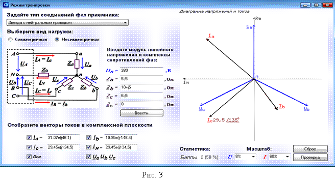

5. ОСНОВНЫЕ СООТНОШЕНИЯ МЕЖДУ
ЭЛЕКТРИЧЕСКИМИ ВЕЛИЧИНАМИ В ТРЁХФАЗНЫХ ЦЕПЯХ
ПРИ СОЕДИНЕНИИ ФАЗ ПРИЁМНИКА ЗВЕЗДОЙ
С НЕЙТРАЛЬНЫМ ПРОВОДОМ И РАЗЛИЧНЫХ РЕЖИМАХ ИХ РАБОТЫ
1. При разработке тренажёра не учитывались сопротивления линейных проводов, поэтому при сопротивлении нейтрального провода Z0 = 0 линейные напряжения между линейными проводами симметричного приёмника равны линейным напряжениям трёхфазного источника энергии, т. е.
Uаb = UAB; Ubc = UBC и Uca = UCA.

У симметричных
(четырёхпроводной и трёхпроводной) трёхфазных систем с одинаковыми
сопротивлениями всех трёх фаз звезды
(Za = Zb = Zc = Zф) модули комплексов токов фаз одинаковые (Ia = Ib = Ic = Iф = Uф/Zф, где модуль фазного напряжения Uф = Uл
/ ), а также
одинаковые сдвиги фаз
), а также
одинаковые сдвиги фаз
jа = jb = jc = jф = arctg(Хф/Rф)
между токами Ia, Ib, Ic и соответствующими фазными напряжениями (см. рис. 3)
Uа = Uф, Ub = Uф, Uc = Uф.
При этом ток в нейтральном проводе при симметричной нагрузке
IN = Ia + Ib + Ic = 0.
Поэтому в случае симметричного приёмника нейтральный провод не нужен, и не прокладывается. Примером такого приёмника является трёхфазный асинхронный двигатель при соединении обмоток статора звездой или треугольником.
При соединении фаз приёмника по схеме звезда линейные токи равны соответствующим фазным токам, т. е.
IA = Ia, IB = Ib, IC = Ic,
и при симметричном приёмнике их модули равны между собой, т. е. Iл = Iф.
2. При наличии нейтрального провода и при обрыве, например, фазы "а" (Uа = UА, Iа = 0) ток в нейтральном проводе IN равен сумме комплексов токов двух других фаз
IN = Ib + Ic,
а при обрыве двух фаз ток IN равен току оставшейся необорванной фазы.
При коротком замыкании той же фазы перегорит фазный предохранитель или сработает контактор или пускатель, установленный в фазе, и получим рассмотренный выше режим работы трёхфазного приёмника с оборванной фазой.
3. При несимметричном трёхфазном приёмнике (Za Zb Zc) с нейтральным проводом при Z0 = 0 фазные токи находят по формулам:
Ia = Uа/Zа; Ib = Ub/Zb; Ic = Uc/Zc,
где Uа = Uф, Ub = Uф Uc = Uф Za = Zа Zb = Zb Zc = Zc а ток в нейтральном проводе
IN = Ia + Ib + Ic.
4. При сопротивлении нейтрального провода Z0 ¹ 0 имеет место комплексное напряжение смещения нейтрали UnN между нейтралью n приёмника и нейтралью генератора N, т. е.
где UА = Uф = Uл / ; UВ = Uф UС = Uф - фазные напряжения источника; Ya = 1/Zа, Yb = 1/Zb, Yc = 1/Zc, Y0 = 1/Z0 - комплексы
проводимостей фаз приёмника и нейтрального провода.
; UВ = Uф UС = Uф - фазные напряжения источника; Ya = 1/Zа, Yb = 1/Zb, Yc = 1/Zc, Y0 = 1/Z0 - комплексы
проводимостей фаз приёмника и нейтрального провода.
Тогда комплексы фазных напряжений приёмника
Uа = UA – UnN, Ub = UB – UnN, Uc = UC – UnN;
при этом фазные токи приёмника определяют по формулам:
Ia = Uа/Zа, Ib = Ub/Zb, Ic = Uc/Zc.
При построении векторных диаграмм напряжений и токов трехфазной цепи оси комплексной плоскости поворачивают на угол 90° против хода часовой стрелки и откладывают вектор фазного напряжения UА фазы А источника вдоль вертикальной оси действительных чисел, вектор UB фазы B поворачивают на угол -120° по ходу часовой стрелки относительно оси действительных чисел, а вектор UC – на угол 120° против хода часовой стрелки относительно той же оси. Затем вычерчивают вектор напряжения смещения нейтрали UnN от начала осей комплексной плоскости.N. Конец вектора UnN (точку n) автоматически соединяется с концами фазных напряжений источника UA, UB и UC и получают векторы Ua, Ub и Uc напряжений фаз приёмника (направление векторов от точки n к концам векторов UA, UB и UC). Начало осей комплексной плоскости автоматически переносится в точку n.
Затем устанавливают фазные токи приёмника Iа, Ib и Ic из точки п с учетом сдвигов фаз jа, jb и jc относительно напряжений Ua, Ub и Uc, а также ток в нейтральном проводе IN = Ia + Ib + Ic.